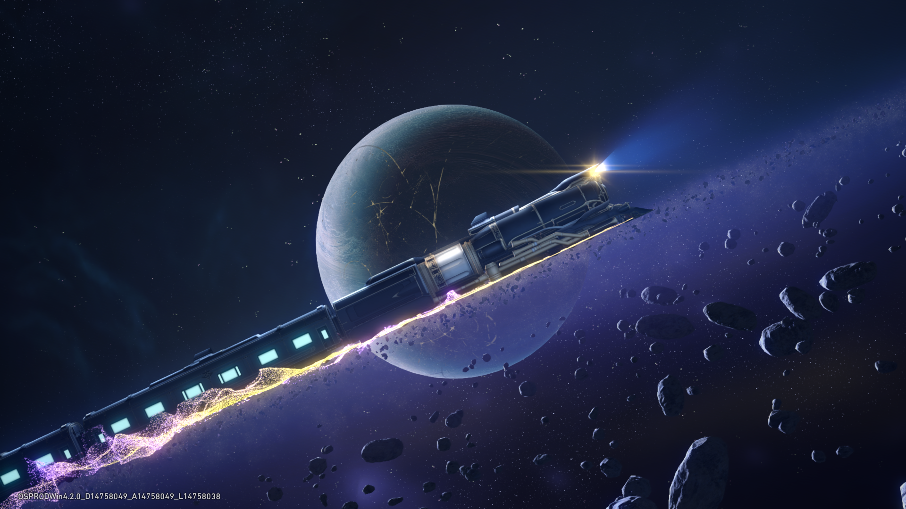
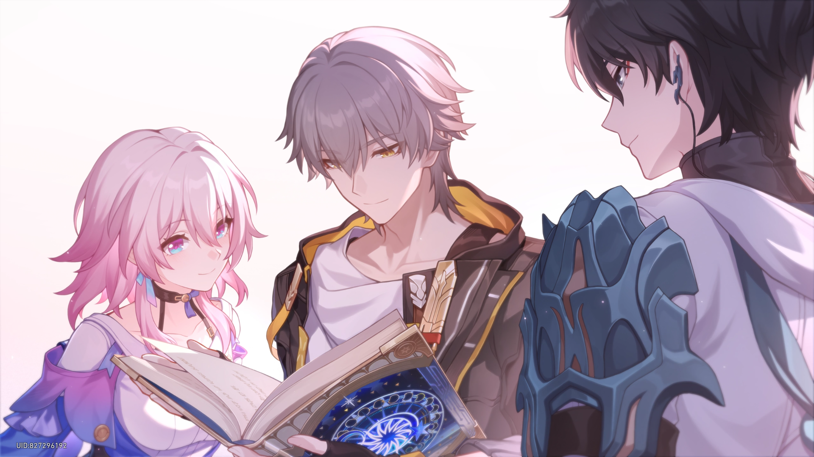
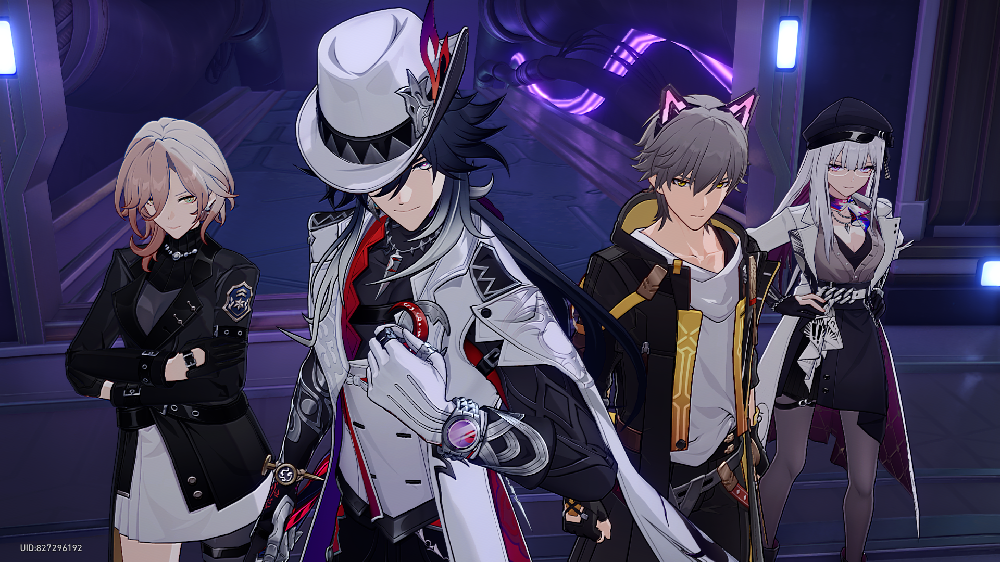
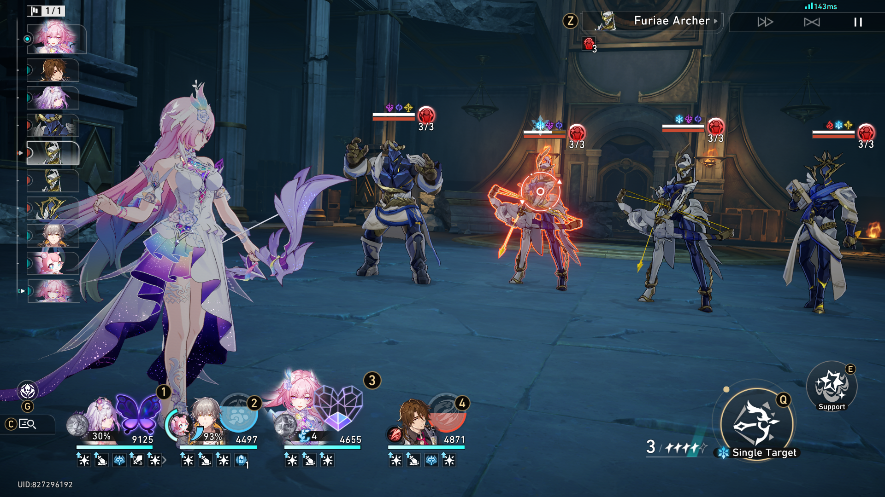

Honkai: Star Rail
Perjalanan kosmik Astral Express, penceritaan antarbintang, dan strategi pertarungan turn-based dalam semesta HoYoverse.

Honkai: Star Rail membuktikan bahwa genre turn-based RPG klasik bisa kembali menarik perhatian pemain melalui nilai produksi yang tinggi. Membawa pemain dalam perjalanan kosmik di atas Astral Express, game ini memadukan fiksi ilmiah, world-building yang luas, dan sistem gacha yang menjadi bagian penting dari pengalaman bermain.
01. Presentasi dan Penceritaan

Salah satu kekuatan Honkai: Star Rail terletak pada presentasi antarmukanya yang tertata dan responsif. Berbagai menu, informasi karakter, serta sistem navigasi disajikan dengan gaya visual yang konsisten.
Dari sisi penceritaan, game ini memadukan konflik kosmik dengan kisah personal para karakternya. Sosok seperti Kafka menambah daya tarik melalui latar belakang dan motivasi yang tidak selalu dijelaskan secara langsung. Di sisi lain, interaksi dengan objek sederhana, termasuk tong sampah, menghadirkan humor yang memberi variasi pada suasana cerita.
Sistem Warp juga menjadi bagian penting dari pengalaman pemain. Daya tarik karakter, animasi, dan latar cerita dapat membangun keterikatan emosional, meskipun mekanisme gacha tetap perlu dinilai secara kritis dari sisi monetisasi.
02. Grafis dan Desain Visual

Gaya visual anime dengan pendekatan cel-shading memberikan identitas yang kuat pada karakter maupun lingkungannya. Desain kostum, efek kemampuan, dan animasi serangan turut memperkuat karakteristik setiap tokoh.
Variasi lingkungan juga menjadi bagian menarik dalam perjalanan Astral Express. Belobog menghadirkan suasana kota bersalju, Xianzhou Luofu menawarkan arsitektur bernuansa fantasi Tiongkok, sedangkan Penacony membawa estetika dunia mimpi yang lebih surealis.
Perbedaan gaya visual antarlokasi membantu memberikan identitas tersendiri pada setiap tempat yang dikunjungi, sekaligus menjaga eksplorasi agar terasa bervariasi.
03. Audio dan Musik

Musik dan efek suara memiliki peran penting dalam membangun suasana setiap lokasi dan pertempuran. Perubahan atmosfer musik dapat memperkuat transisi dari eksplorasi yang tenang menuju pertarungan dengan skala lebih besar.
Komposisi musik dari HOYO-MiX menjadi bagian penting dari identitas audio game ini. Musik dapat memperkuat suasana cerita, terutama ketika melodi dan vokal dipadukan dengan momen penting dalam perjalanan pemain.
An Eternal Page
HOYO-MiX · Honkai: Star Rail
Featured SoundtrackSoundtrack pilihan: An Eternal Page — musik yang mengandung kesan melankolis. Tekan tombol play untuk mendengarkan.
Buka di YouTube →Selain musik, voice acting, efek suara kemampuan, dan ambience lingkungan turut memperkuat karakteristik setiap lokasi. Perpaduan elemen tersebut membuat audio tidak hanya menjadi pelengkap, tetapi juga bagian dari penyampaian cerita dan suasana.
04. Gameplay dan Sistem Pertarungan

Sistem pertarungan turn-based Honkai: Star Rail mengandalkan pengelolaan skill point, urutan giliran, komposisi tim, dan pemanfaatan kelemahan musuh. Pemain perlu mempertimbangkan peran setiap karakter serta sinergi antaranggota tim, bukan hanya mengandalkan besarnya statistik.
Sistem Path membantu membedakan peran karakter, sedangkan elemen dan mekanik Weakness Break memberi alasan untuk menyesuaikan komposisi tim dengan musuh yang dihadapi.
Mode seperti Simulated Universe menambahkan variasi dengan pilihan bonus dan kombinasi kemampuan selama perjalanan. Sementara itu, fitur Auto-Battle dan berbagai peningkatan kenyamanan dapat mengurangi repetisi, walaupun pada sebagian aktivitas membuat keterlibatan pemain terasa lebih pasif.
The Verdict
"Sebuah RPG fiksi ilmiah dengan lore kosmik yang mendalam, nilai produksi visual dan audio yang kuat, serta mekanik pertarungan taktis yang memuaskan. Di balik daya tarik tersebut, sistem gacha dan kebutuhan grinding tetap menjadi aspek yang perlu dipertimbangkan pemain."
Skor dan kesimpulan merupakan penilaian pribadi penulis.